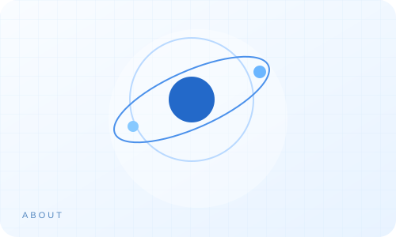
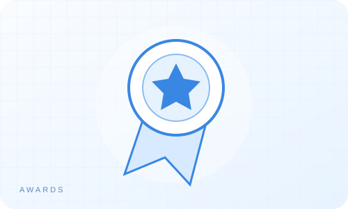

Teachers’ beliefs about students experiencing academic difficulty
Conducting interviews and literature review, developing survey items, and qualitatively coding teachers’ beliefs about neuromyths and teaching practices.
Selected work across science education, AI-supported learning, XR, and multimodal learning analytics.
Inquiry-based learningXR / immersive learningHuman-AI collaborationMMLAConducting interviews and literature review, developing survey items, and qualitatively coding teachers’ beliefs about neuromyths and teaching practices.

Helped develop and validate a public speaking competence rubric, ideate an XR feedback system, conduct usability tests, and support design-based research meetings.

Defined reasoning phases, designed an experiment, and collected and analyzed eye-tracking data to examine strategy patterns and achievement.

Designed an experimental procedure and analyzed learner question patterns and perceptions in generative-AI-supported English reading.
Conducted field observations and interviews with students, teachers, and principals in elementary and middle schools; examined factors related to student competency development.

Designed an educational AI platform using keywords and student questions to support convergent thinking; this work led to a peer-reviewed journal article.